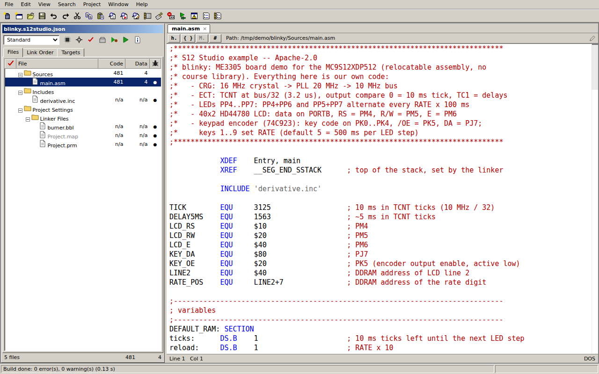
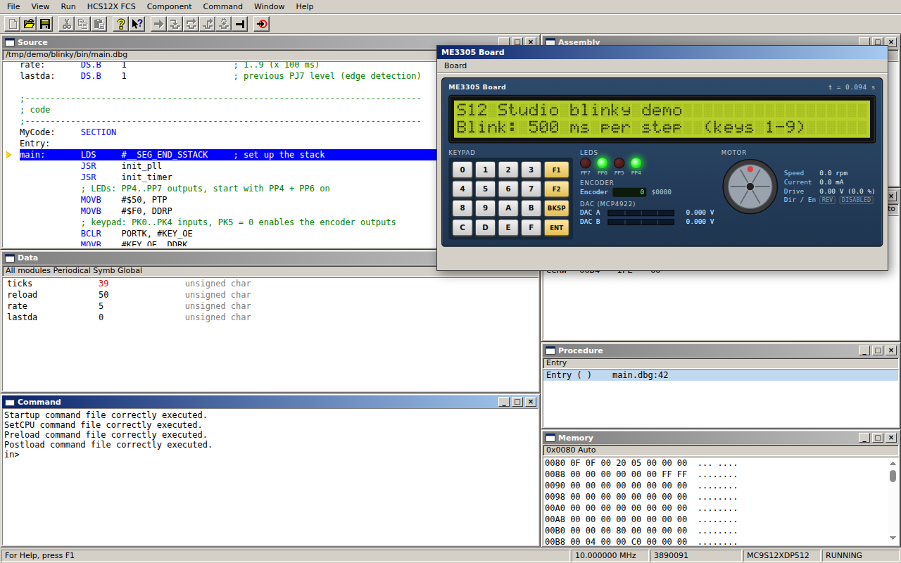

ME 3305 lab work on your own laptop
S12 Studio is a free app for writing, building and debugging MC9S12XDP512 assembly. It works like the lab's CodeWarrior IDE and debugger, opens your lab projects, and runs them on a simulated ME 3305 board in real time, on Windows and Mac.

Download
Pick your system. All files are on the latest release page.
-
Windows 10 / 11
64-bit installer (.exe). Updates itself.
Download for Windows -
macOS, Apple Silicon
M1, M2, M3, M4... Macs (.dmg, arm64). Simulator only.
Download for Apple Silicon -
macOS, Intel
Intel Macs (.dmg, x64). Simulator only.
Download for Intel Mac -
Linux
64-bit AppImage. Make it executable, then run it.
Download for Linux
Beta builds are not code-signed yet, so Windows and macOS warn you the first time you open S12 Studio. That is expected. The install guide shows what to click (Windows: More info → Run anyway; Mac: System Settings → Privacy & Security → Open Anyway).
Not sure which Mac you have? Apple menu → About This Mac: "Chip: Apple M…" means Apple Silicon, "Processor: Intel" means Intel.
Quick start
-
Open your lab project
Copy the
blank_projectfolder ME 3305 gives you (course page), then File → Open… and pick its.mcp. S12 Studio does not include the course library or template; they come with your course's project folder. -
Build
Press F7 (Make). Errors show up in the Errors & Warnings window; double-click one to jump to the line.
-
Debug on the board
Press F5 to open the debugger; the ME3305 Board opens on the right. Press F5 again to run. Click the keypad to type; F6 halts, F11 steps.
No course project yet? Open the demo project (Help → Open Demo Project, or from the startup dialog), or File → New Project for an empty assembly project (without the ME 3305 library).

FAQ
Is this CodeWarrior?
No. S12 Studio is an independent, open-source program written from scratch by a student. It looks and works like CodeWarrior for S12(X) 5.1 so that lab handouts apply, opens the same project files, and its assembler and linker produce the same output files. It is not made, endorsed or supported by NXP. CodeWarrior is a trademark of NXP B.V.
Where do I get the ME 3305 library / blank project?
From your course: the library and the template are in the blank_project folder ME 3305
gives you (course page). S12 Studio does not include any course material. Copy that folder and open its
.mcp with File → Open….
Does it work with the lab board and the P&E pod?
Not yet. This release is the simulator edition: your program runs on a simulated MC9S12XDP512 and ME 3305 board. To run on the real board, use a lab PC for now. Real-board support on Windows is planned for the next release.
Does it work on a Mac?
Yes, as a simulator, on Apple Silicon and Intel Macs. The P&E pod's driver only exists for Windows, so real-board debugging will stay Windows-only.
Is my code uploaded anywhere?
No. Everything runs on your computer: editing, building and simulation. There is no account, no telemetry and no cloud. The only network request is the check for a new version on GitHub.
Will my build match the lab PC?
That is the goal: the assembler, linker and S-record output are tested byte for byte against CodeWarrior's. If you find a difference, please report it with a small example.
Why does my computer warn me when I install it?
Code-signing certificates cost money, and this beta is not signed yet. The install guide explains each warning and what to click.
Something is wrong. Where do I report it?
Open an issue on GitHub with your OS, the version (Help → About) and what happened. Please do not post graded lab solutions; a small example that shows the problem is best.